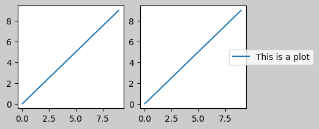
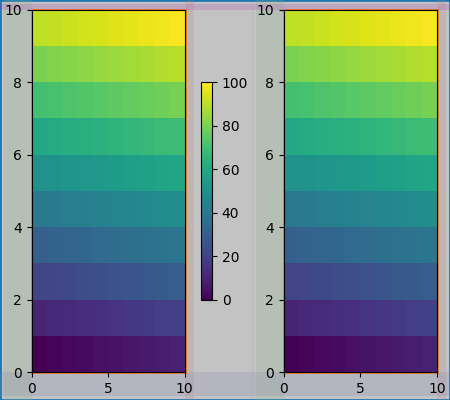

Note
Click here to download the full example code
Constrained Layout Guide¶
How to use constrained-layout to fit plots within your figure cleanly.
constrained_layout automatically adjusts subplots and decorations like legends and colorbars so that they fit in the figure window while still preserving, as best they can, the logical layout requested by the user.
constrained_layout is similar to tight_layout, but uses a constraint solver to determine the size of axes that allows them to fit.
constrained_layout needs to be activated before any axes are added to a figure. Two ways of doing so are
using the respective argument to
subplots()orfigure(), e.g.:plt.subplots(constrained_layout=True)
activate it via rcParams, like:
plt.rcParams['figure.constrained_layout.use'] = True
Those are described in detail throughout the following sections.
Warning
Currently Constrained Layout is experimental. The
behaviour and API are subject to change, or the whole functionality
may be removed without a deprecation period. If you require your
plots to be absolutely reproducible, get the Axes positions after
running Constrained Layout and use ax.set_position() in your code
with constrained_layout=False.
Simple Example¶
In Matplotlib, the location of axes (including subplots) are specified in normalized figure coordinates. It can happen that your axis labels or titles (or sometimes even ticklabels) go outside the figure area, and are thus clipped.
import matplotlib.pyplot as plt
import matplotlib.colors as mcolors
import matplotlib.gridspec as gridspec
import numpy as np
plt.rcParams['savefig.facecolor'] = "0.8"
plt.rcParams['figure.figsize'] = 4.5, 4.
plt.rcParams['figure.max_open_warning'] = 50
def example_plot(ax, fontsize=12, hide_labels=False):
ax.plot([1, 2])
ax.locator_params(nbins=3)
if hide_labels:
ax.set_xticklabels([])
ax.set_yticklabels([])
else:
ax.set_xlabel('x-label', fontsize=fontsize)
ax.set_ylabel('y-label', fontsize=fontsize)
ax.set_title('Title', fontsize=fontsize)
fig, ax = plt.subplots(constrained_layout=False)
example_plot(ax, fontsize=24)
To prevent this, the location of axes needs to be adjusted. For
subplots, this can be done by adjusting the subplot params
(Move the edge of an axes to make room for tick labels). However, specifying your figure with the
constrained_layout=True kwarg will do the adjusting automatically.
fig, ax = plt.subplots(constrained_layout=True)
example_plot(ax, fontsize=24)
When you have multiple subplots, often you see labels of different axes overlapping each other.
fig, axs = plt.subplots(2, 2, constrained_layout=False)
for ax in axs.flat:
example_plot(ax)
Specifying constrained_layout=True in the call to plt.subplots
causes the layout to be properly constrained.
fig, axs = plt.subplots(2, 2, constrained_layout=True)
for ax in axs.flat:
example_plot(ax)
Colorbars¶
If you create a colorbar with Figure.colorbar,
you need to make room for it. constrained_layout does this
automatically. Note that if you specify use_gridspec=True it will be
ignored because this option is made for improving the layout via
tight_layout.
Note
For the pcolormesh kwargs (pc_kwargs) we use a
dictionary. Below we will assign one colorbar to a number of axes each
containing a ScalarMappable; specifying the norm and colormap
ensures the colorbar is accurate for all the axes.
arr = np.arange(100).reshape((10, 10))
norm = mcolors.Normalize(vmin=0., vmax=100.)
# see note above: this makes all pcolormesh calls consistent:
pc_kwargs = {'rasterized': True, 'cmap': 'viridis', 'norm': norm}
fig, ax = plt.subplots(figsize=(4, 4), constrained_layout=True)
im = ax.pcolormesh(arr, **pc_kwargs)
fig.colorbar(im, ax=ax, shrink=0.6)
Out:
<matplotlib.colorbar.Colorbar object at 0x7f57e5644f40>
If you specify a list of axes (or other iterable container) to the
ax argument of colorbar, constrained_layout will take space from
the specified axes.
fig, axs = plt.subplots(2, 2, figsize=(4, 4), constrained_layout=True)
for ax in axs.flat:
im = ax.pcolormesh(arr, **pc_kwargs)
fig.colorbar(im, ax=axs, shrink=0.6)
Out:
<matplotlib.colorbar.Colorbar object at 0x7f57e41a1670>
If you specify a list of axes from inside a grid of axes, the colorbar will steal space appropriately, and leave a gap, but all subplots will still be the same size.
fig, axs = plt.subplots(3, 3, figsize=(4, 4), constrained_layout=True)
for ax in axs.flat:
im = ax.pcolormesh(arr, **pc_kwargs)
fig.colorbar(im, ax=axs[1:, ][:, 1], shrink=0.8)
fig.colorbar(im, ax=axs[:, -1], shrink=0.6)
Out:
<matplotlib.colorbar.Colorbar object at 0x7f57e575baf0>
Suptitle¶
constrained_layout can also make room for suptitle.
fig, axs = plt.subplots(2, 2, figsize=(4, 4), constrained_layout=True)
for ax in axs.flat:
im = ax.pcolormesh(arr, **pc_kwargs)
fig.colorbar(im, ax=axs, shrink=0.6)
fig.suptitle('Big Suptitle')
Out:
Text(0.5, 0.98, 'Big Suptitle')
Legends¶
Legends can be placed outside of their parent axis.
Constrained-layout is designed to handle this for Axes.legend().
However, constrained-layout does not handle legends being created via
Figure.legend() (yet).
fig, ax = plt.subplots(constrained_layout=True)
ax.plot(np.arange(10), label='This is a plot')
ax.legend(loc='center left', bbox_to_anchor=(0.8, 0.5))
Out:
<matplotlib.legend.Legend object at 0x7f57e5ac5250>
However, this will steal space from a subplot layout:
Out:
<matplotlib.legend.Legend object at 0x7f57e5b64070>
In order for a legend or other artist to not steal space
from the subplot layout, we can leg.set_in_layout(False).
Of course this can mean the legend ends up
cropped, but can be useful if the plot is subsequently called
with fig.savefig('outname.png', bbox_inches='tight'). Note,
however, that the legend's get_in_layout status will have to be
toggled again to make the saved file work, and we must manually
trigger a draw if we want constrained_layout to adjust the size
of the axes before printing.
fig, axs = plt.subplots(1, 2, figsize=(4, 2), constrained_layout=True)
axs[0].plot(np.arange(10))
axs[1].plot(np.arange(10), label='This is a plot')
leg = axs[1].legend(loc='center left', bbox_to_anchor=(0.8, 0.5))
leg.set_in_layout(False)
# trigger a draw so that constrained_layout is executed once
# before we turn it off when printing....
fig.canvas.draw()
# we want the legend included in the bbox_inches='tight' calcs.
leg.set_in_layout(True)
# we don't want the layout to change at this point.
fig.set_constrained_layout(False)
fig.savefig('../../doc/_static/constrained_layout_1b.png',
bbox_inches='tight', dpi=100)
The saved file looks like:

A better way to get around this awkwardness is to simply
use the legend method provided by Figure.legend:
fig, axs = plt.subplots(1, 2, figsize=(4, 2), constrained_layout=True)
axs[0].plot(np.arange(10))
lines = axs[1].plot(np.arange(10), label='This is a plot')
labels = [l.get_label() for l in lines]
leg = fig.legend(lines, labels, loc='center left',
bbox_to_anchor=(0.8, 0.5), bbox_transform=axs[1].transAxes)
fig.savefig('../../doc/_static/constrained_layout_2b.png',
bbox_inches='tight', dpi=100)
The saved file looks like:
Padding and Spacing¶
Padding between axes is controlled in the horizontal by w_pad and
wspace, and vertical by h_pad and hspace. These can be edited
via set_constrained_layout_pads. w/h_pad are
the minimum space around the axes in units of inches:
fig, axs = plt.subplots(2, 2, constrained_layout=True)
for ax in axs.flat:
example_plot(ax, hide_labels=True)
fig.set_constrained_layout_pads(w_pad=4 / 72, h_pad=4 / 72, hspace=0, wspace=0)
Spacing between subplots is further set by wspace and hspace. These are specified as a fraction of the size of the subplot group as a whole. If these values are smaller than w_pad or h_pad, then the fixed pads are used instead. Note in the below how the space at the edges doesn't change from the above, but the space between subplots does.
fig, axs = plt.subplots(2, 2, constrained_layout=True)
for ax in axs.flat:
example_plot(ax, hide_labels=True)
fig.set_constrained_layout_pads(w_pad=4 / 72, h_pad=4 / 72, hspace=0.2,
wspace=0.2)

If there are more than two columns, the wspace is shared between them, so here the wspace is divided in 2, with a wspace of 0.1 between each column:
fig, axs = plt.subplots(2, 3, constrained_layout=True)
for ax in axs.flat:
example_plot(ax, hide_labels=True)
fig.set_constrained_layout_pads(w_pad=4 / 72, h_pad=4 / 72, hspace=0.2,
wspace=0.2)
GridSpecs also have optional hspace and wspace keyword arguments,
that will be used instead of the pads set by constrained_layout:
fig, axs = plt.subplots(2, 2, constrained_layout=True,
gridspec_kw={'wspace': 0.3, 'hspace': 0.2})
for ax in axs.flat:
example_plot(ax, hide_labels=True)
# this has no effect because the space set in the gridspec trumps the
# space set in constrained_layout.
fig.set_constrained_layout_pads(w_pad=4 / 72, h_pad=4 / 72, hspace=0.0,
wspace=0.0)
plt.show()
Spacing with colorbars¶
Colorbars are placed a distance pad from their parent, where pad is a fraction of the width of the parent(s). The spacing to the next subplot is then given by w/hspace.
fig, axs = plt.subplots(2, 2, constrained_layout=True)
pads = [0, 0.05, 0.1, 0.2]
for pad, ax in zip(pads, axs.flat):
pc = ax.pcolormesh(arr, **pc_kwargs)
fig.colorbar(pc, ax=ax, shrink=0.6, pad=pad)
ax.set_xticklabels('')
ax.set_yticklabels('')
ax.set_title(f'pad: {pad}')
fig.set_constrained_layout_pads(w_pad=2 / 72, h_pad=2 / 72, hspace=0.2,
wspace=0.2)
rcParams¶
There are five rcParams that can be set,
either in a script or in the matplotlibrc file.
They all have the prefix figure.constrained_layout:
- use: Whether to use constrained_layout. Default is False
- w_pad, h_pad: Padding around axes objects. Float representing inches. Default is 3./72. inches (3 pts)
- wspace, hspace: Space between subplot groups. Float representing a fraction of the subplot widths being separated. Default is 0.02.
plt.rcParams['figure.constrained_layout.use'] = True
fig, axs = plt.subplots(2, 2, figsize=(3, 3))
for ax in axs.flat:
example_plot(ax)
Use with GridSpec¶
constrained_layout is meant to be used
with subplots() or
GridSpec() and
add_subplot().
Note that in what follows constrained_layout=True
fig = plt.figure()
gs1 = gridspec.GridSpec(2, 1, figure=fig)
ax1 = fig.add_subplot(gs1[0])
ax2 = fig.add_subplot(gs1[1])
example_plot(ax1)
example_plot(ax2)
More complicated gridspec layouts are possible. Note here we use the
convenience functions add_gridspec and
subgridspec.
fig = plt.figure()
gs0 = fig.add_gridspec(1, 2)
gs1 = gs0[0].subgridspec(2, 1)
ax1 = fig.add_subplot(gs1[0])
ax2 = fig.add_subplot(gs1[1])
example_plot(ax1)
example_plot(ax2)
gs2 = gs0[1].subgridspec(3, 1)
for ss in gs2:
ax = fig.add_subplot(ss)
example_plot(ax)
ax.set_title("")
ax.set_xlabel("")
ax.set_xlabel("x-label", fontsize=12)
Out:
Text(0.5, 0, 'x-label')
Note that in the above the left and right columns don't have the same vertical extent. If we want the top and bottom of the two grids to line up then they need to be in the same gridspec. We need to make this figure larger as well in order for the axes not to collapse to zero height:
fig = plt.figure(figsize=(4, 6))
gs0 = fig.add_gridspec(6, 2)
ax1 = fig.add_subplot(gs0[:3, 0])
ax2 = fig.add_subplot(gs0[3:, 0])
example_plot(ax1)
example_plot(ax2)
ax = fig.add_subplot(gs0[0:2, 1])
example_plot(ax, hide_labels=True)
ax = fig.add_subplot(gs0[2:4, 1])
example_plot(ax, hide_labels=True)
ax = fig.add_subplot(gs0[4:, 1])
example_plot(ax, hide_labels=True)
fig.suptitle('Overlapping Gridspecs')
Out:
Text(0.5, 0.98, 'Overlapping Gridspecs')
This example uses two gridspecs to have the colorbar only pertain to one set of pcolors. Note how the left column is wider than the two right-hand columns because of this. Of course, if you wanted the subplots to be the same size you only needed one gridspec.
def docomplicated(suptitle=None):
fig = plt.figure()
gs0 = fig.add_gridspec(1, 2, figure=fig, width_ratios=[1., 2.])
gsl = gs0[0].subgridspec(2, 1)
gsr = gs0[1].subgridspec(2, 2)
for gs in gsl:
ax = fig.add_subplot(gs)
example_plot(ax)
axs = []
for gs in gsr:
ax = fig.add_subplot(gs)
pcm = ax.pcolormesh(arr, **pc_kwargs)
ax.set_xlabel('x-label')
ax.set_ylabel('y-label')
ax.set_title('title')
axs += [ax]
fig.colorbar(pcm, ax=axs)
if suptitle is not None:
fig.suptitle(suptitle)
docomplicated()
Manually setting axes positions¶
There can be good reasons to manually set an axes position. A manual call
to set_position will set the axes so constrained_layout has
no effect on it anymore. (Note that constrained_layout still leaves the
space for the axes that is moved).
fig, axs = plt.subplots(1, 2)
example_plot(axs[0], fontsize=12)
axs[1].set_position([0.2, 0.2, 0.4, 0.4])
Manually turning off constrained_layout¶
constrained_layout usually adjusts the axes positions on each draw
of the figure. If you want to get the spacing provided by
constrained_layout but not have it update, then do the initial
draw and then call fig.set_constrained_layout(False).
This is potentially useful for animations where the tick labels may
change length.
Note that constrained_layout is turned off for ZOOM and PAN
GUI events for the backends that use the toolbar. This prevents the
axes from changing position during zooming and panning.
Limitations¶
Incompatible functions¶
constrained_layout will work with pyplot.subplot, but only if the
number of rows and columns is the same for each call.
The reason is that each call to pyplot.subplot will create a new
GridSpec instance if the geometry is not the same, and
constrained_layout. So the following works fine:
fig = plt.figure()
ax1 = plt.subplot(2, 2, 1)
ax2 = plt.subplot(2, 2, 3)
# third axes that spans both rows in second column:
ax3 = plt.subplot(2, 2, (2, 4))
example_plot(ax1)
example_plot(ax2)
example_plot(ax3)
plt.suptitle('Homogenous nrows, ncols')
Out:
Text(0.5, 0.98, 'Homogenous nrows, ncols')
but the following leads to a poor layout:
fig = plt.figure()
ax1 = plt.subplot(2, 2, 1)
ax2 = plt.subplot(2, 2, 3)
ax3 = plt.subplot(1, 2, 2)
example_plot(ax1)
example_plot(ax2)
example_plot(ax3)
plt.suptitle('Mixed nrows, ncols')
Out:
Text(0.5, 0.98, 'Mixed nrows, ncols')
Similarly,
subplot2grid works with the same limitation
that nrows and ncols cannot change for the layout to look good.
fig = plt.figure()
ax1 = plt.subplot2grid((3, 3), (0, 0))
ax2 = plt.subplot2grid((3, 3), (0, 1), colspan=2)
ax3 = plt.subplot2grid((3, 3), (1, 0), colspan=2, rowspan=2)
ax4 = plt.subplot2grid((3, 3), (1, 2), rowspan=2)
example_plot(ax1)
example_plot(ax2)
example_plot(ax3)
example_plot(ax4)
fig.suptitle('subplot2grid')
Out:
Text(0.5, 0.98, 'subplot2grid')
Other Caveats¶
constrained_layoutonly considers ticklabels, axis labels, titles, and legends. Thus, other artists may be clipped and also may overlap.- It assumes that the extra space needed for ticklabels, axis labels, and titles is independent of original location of axes. This is often true, but there are rare cases where it is not.
- There are small differences in how the backends handle rendering fonts, so the results will not be pixel-identical.
- An artist using axes coordinates that extend beyond the axes
boundary will result in unusual layouts when added to an
axes. This can be avoided by adding the artist directly to the
Figureusingadd_artist(). SeeConnectionPatchfor an example.
Debugging¶
Constrained-layout can fail in somewhat unexpected ways. Because it uses a constraint solver the solver can find solutions that are mathematically correct, but that aren't at all what the user wants. The usual failure mode is for all sizes to collapse to their smallest allowable value. If this happens, it is for one of two reasons:
- There was not enough room for the elements you were requesting to draw.
- There is a bug - in which case open an issue at https://github.com/matplotlib/matplotlib/issues.
If there is a bug, please report with a self-contained example that does not require outside data or dependencies (other than numpy).
Notes on the algorithm¶
The algorithm for the constraint is relatively straightforward, but has some complexity due to the complex ways we can layout a figure.
Layout in Matplotlib is carried out with gridspecs
via the GridSpec class. A gridspec is a logical division of the figure
into rows and columns, with the relative width of the Axes in those
rows and columns set by width_ratios and height_ratios.
In constrained_layout, each gridspec gets a layoutgrid associated with
it. The layoutgrid has a series of left and right variables
for each column, and bottom and top variables for each row, and
further it has a margin for each of left, right, bottom and top. In each
row, the bottom/top margins are widened until all the decorators
in that row are accommodated. Similarly for columns and the left/right
margins.
Simple case: one Axes¶
For a single Axes the layout is straight forward. There is one parent
layoutgrid for the figure consisting of one column and row, and
a child layoutgrid for the gridspec that contains the axes, again
consisting of one row and column. Space is made for the "decorations" on
each side of the axes. In the code, this is accomplished by the entries in
do_constrained_layout() like:
gridspec._layoutgrid[0, 0].edit_margin_min('left',
-bbox.x0 + pos.x0 + w_pad)
where bbox is the tight bounding box of the axes, and pos its
position. Note how the four margins encompass the axes decorations.
from matplotlib._layoutgrid import plot_children
fig, ax = plt.subplots(constrained_layout=True)
example_plot(ax, fontsize=24)
plot_children(fig, fig._layoutgrid)
Simple case: two Axes¶
When there are multiple axes they have their layouts bound in simple ways. In this example the left axes has much larger decorations than the right, but they share a bottom margin, which is made large enough to accommodate the larger xlabel. Same with the shared top margin. The left and right margins are not shared, and hence are allowed to be different.
fig, ax = plt.subplots(1, 2, constrained_layout=True)
example_plot(ax[0], fontsize=32)
example_plot(ax[1], fontsize=8)
plot_children(fig, fig._layoutgrid, printit=False)
Two Axes and colorbar¶
A colorbar is simply another item that expands the margin of the parent layoutgrid cell:
Colorbar associated with a Gridspec¶
If a colorbar belongs to more than one cell of the grid, then it makes a larger margin for each:
fig, axs = plt.subplots(2, 2, constrained_layout=True)
for ax in axs.flat:
im = ax.pcolormesh(arr, **pc_kwargs)
fig.colorbar(im, ax=axs, shrink=0.6)
plot_children(fig, fig._layoutgrid, printit=False)
Uneven sized Axes¶
There are two ways to make axes have an uneven size in a Gridspec layout, either by specifying them to cross Gridspecs rows or columns, or by specifying width and height ratios.
The first method is used here. Note that the middle top and
bottom margins are not affected by the left-hand column. This
is a conscious decision of the algorithm, and leads to the case where
the two right-hand axes have the same height, but it is not 1/2 the height
of the left-hand axes. This is consietent with how gridspec works
without constrained layout.
fig = plt.figure(constrained_layout=True)
gs = gridspec.GridSpec(2, 2, figure=fig)
ax = fig.add_subplot(gs[:, 0])
im = ax.pcolormesh(arr, **pc_kwargs)
ax = fig.add_subplot(gs[0, 1])
im = ax.pcolormesh(arr, **pc_kwargs)
ax = fig.add_subplot(gs[1, 1])
im = ax.pcolormesh(arr, **pc_kwargs)
plot_children(fig, fig._layoutgrid, printit=False)

One case that requires finessing is if margins do not have any artists constraining their width. In the case below, the right margin for column 0 and the left margin for column 3 have no margin artists to set their width, so we take the maximum width of the margin widths that do have artists. This makes all the axes have the same size:
fig = plt.figure(constrained_layout=True)
gs = fig.add_gridspec(2, 4)
ax00 = fig.add_subplot(gs[0, 0:2])
ax01 = fig.add_subplot(gs[0, 2:])
ax10 = fig.add_subplot(gs[1, 1:3])
example_plot(ax10, fontsize=14)
plot_children(fig, fig._layoutgrid)
Total running time of the script: ( 0 minutes 12.242 seconds)
Keywords: matplotlib code example, codex, python plot, pyplot Gallery generated by Sphinx-Gallery